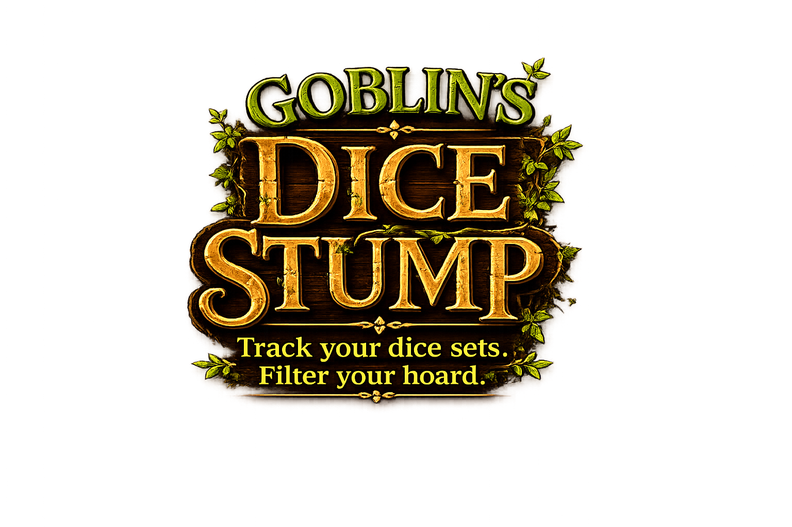
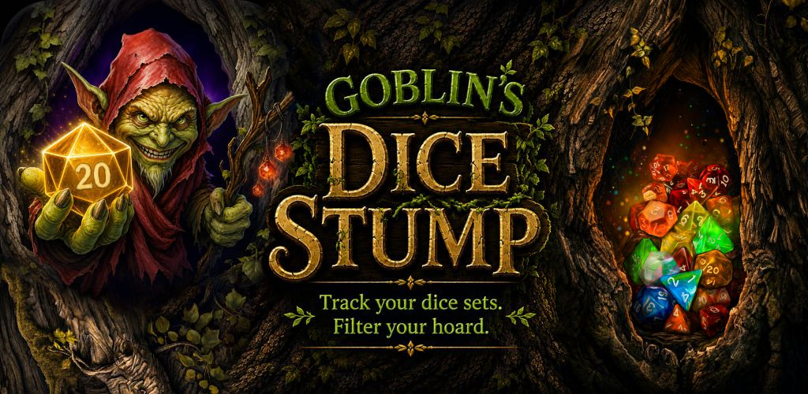

Catalogue Your Hoard
Save your dice sets with names, brands, types, notes, and collection details.

Goblin's Dice Stump is a fantasy-themed dice collection app for tabletop players, collectors, and dice goblins who want to catalogue their shiny math rocks.

Goblin's Dice Stump helps you keep track of your tabletop dice collection with a fun fantasy theme. Add dice sets, store details, attach images, filter your collection, and keep your hoard organized.
Save your dice sets with names, brands, types, notes, and collection details.

Keep your collection safer with export, import, and optional cloud features.

A warm, playful interface made for collectors who enjoy a little character.
Need help with Goblin's Dice Stump? Contact Hollowquill Studios at support@hollowquillstudios.com .